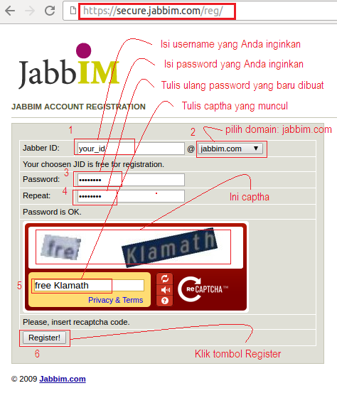

Membuat Akun Jabber
Di OtomaX Anda dapat melakukan host to host ke server lain (baik mereka menggunakan software OtomaX atau tidak, sepanjang software mereka mendukung protokol Jabber/XMPP) dengan menggunakan layanan chat dengan protokol Jabber/XMPP (klik disini), diantaranya jabbim.com. Namun sebelumnya Anda harus membuat Akun Jabber terlebih dahulu, dalam kesempatan ini akan menggunakan layanan chat yang disediakan oleh jabbim.com, langkah - langkahnya sebagai berikut:
- Kunjungi alamat pendaftaran Akun Jabber jabbim.com, klik disini.
-
Akan muncul form pendaftaran, isi sesuai petunjuk di gambar di bawah ini:

- Jika pengisian data - data sudah sesuai, Akun Jabber jabbim.com Anda akan berhasil dibuat (pada contoh ini Akun Anda menjadi: your_id@jabbim.com) dan dapat digunakan di OtomaX.
- Untuk menggunakan Akun Jabber jabbim.com tersebut untuk host to host klik disini.
- Selesai.